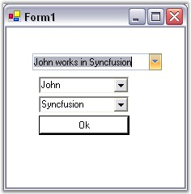

This section illustrates the solutions for various task-based queries about the control.
This section deals on how to use two comboboxes within the dropdown area of a ComboDropDown. The panel contains two ComboBoxes and a Button. The text will change only after the Button had pressed.
The steps are as follows.
1. Create the ComboBoxes and OK button.
2. Populate the ComboBoxes.
3. Add these controls to the Panel.
4. Set the PopupControl property of the ComboDropDown to the same Panel.
5. To avoid closing the ComboDropDown after selecting the item in ComboBox, handle the SelectedIndexChanged event of both ComboBoxes and keep the DropDown showing.
|
[C#]
//Indicates whether the combo box is displaying its drop-down portion. private void comboBox1_SelectedIndexChanged(object sender,EventArgs e) { comboDropDown1.DroppedDown=true; }
private void comboBox2_SelectedIndexChanged(object sender,EventArgs e) { comboDropDown1.DroppedDown=true; } |
|
[VB.NET]
'Indicates whether the combo box is displaying its drop-down portion. Private Sub comboBox1_SelectedIndexChanged(ByVal sender As Object, ByVal e As EventArgs) comboDropDown1.DroppedDown=True End Sub
Private Sub comboBox2_SelectedIndexChanged(ByVal sender As Object, ByVal e As EventArgs) comboDropDown1.DroppedDown=True End Sub |
6. In the button click event of the Button inside the panel, insert these codes to close DropDown and to change text of ComboDropDown.
|
[C#]
// Closes the dropdown and changes the text. private void button1_Click(object sender,EventArgs e) { comboDropDown.Text=comboBox1.Text+ “ “ + comboBox2.Text; comboDropDown1.DroppedDown=false; } |
|
[VB.NET]
' Closes the dropdown and changes the text. Private Sub button1_Click(ByVal sender As Object, ByVal e As EventArgs) comboDropDown.Text=comboBox1.Text+ " works in" + comboBox2.Text comboDropDown1.DroppedDown=False End Sub |

Figure 342: Editing ComboDropDown text using another two Comboboxes
We can derive custom ComboDropDown control and override DrawListModeEditPortion property to remove the selection as follows.
|
[C#]
public class CustomComboDropDown : ComboDropDown { public CustomComboDropDown() { }
protected override void DrawListModeEditPortion(PaintEventArgs e, Color highlightBG, Color highlightText, bool drawFocusRect) {
// Set the highlightBG to Color.Transparent to draw transparent selection. // Set drawFocusRect to false to hide the focus rectangle. base.DrawListModeEditPortion(e, Color.Transparent, highlightText, false); } } |
|
[VB.NET]
Public Class CustomComboDropDown : Inherits ComboDropDown Public Sub New() End Sub
Protected Overrides Sub DrawListModeEditPortion(ByVal e As PaintEventArgs, ByVal highlightBG As Color, ByVal highlightText As Color, ByVal drawFocusRect As Boolean)
' Set the highlightBG to Color.Transparent to draw transparent selection. ' Set drawFocusRect to false to hide the focus rectangle. MyBase.DrawListModeEditPortion(e, Color.Transparent, highlightText, False) End Sub End Class |